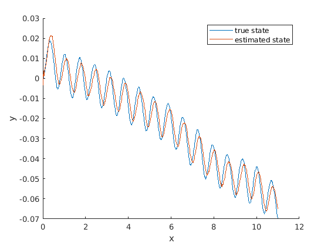

State update of a physical system by the Kalman filter
The following script is plotting two state variables (positions of an object) of a physical (hidden) system, and tries to estimate these state variables starting from an initial state estimate and covariance by gathering sequential observations and using this observatiions
The state variables of the system are x: x coordinate of position y: y coordinate of position u: velocity in the x direction v: velocity in the y direction
Contents
Initiate code
clearvars clf % Add physical system object to the path: addpath demo/lecture/kalman/ % If FLAG_UPDATE is set to FALSE, the state estimate will be based only on % the initial estimate and covariance of the state corresponding to t=0. If % set to TRUE, an observation is taken at ever H timestep and the estimate % is updated flag_update = true;
Initiate model and locate memory for state vectors
Define 'real' system
sys=RealSystem(); % Number of time steps n=1000; % Initiate vectors for the 'true' but hidden state x_true_i=[]; y_true_i=[]; % Initiate vectors for the estimated state x_est_i=[]; y_est_i=[];
Initial estimate and covariance of the estimator of state variables
% Estimate of state variables at t=0 (mean of the estimator) x0=[sys.get_observation();1.2;0]; % Covariance of these state estimators P0=eye(4)*0.2;
Define matrices
transition matrix
F=sys.get_transition_matrix(); % observation matrix H=sys.get_observation_matrix(); % Process noise cavariance matrix Q=sys.get_process_noise_matrix(); % Observation noise cavariance matrix R=sys.get_observation_noise_matrix(); for i=1:n
initiate previous estimate and covariance
if i == 1 xp=x0; Pp=P0; else xp=xn; Pp=Pn; end
Compute next hidden 'real' state of the system
sys.do_step();
x_true_i(end+1)=sys.x;
y_true_i(end+1)=sys.y;
% the followings should be uncommented if to be plotted on the flow
%hold off
%plot(x_true_i,y_true_i) % plot state
Prediction
mean of predicted state
xnp=F*xp;
% covariance of predicted state
Pnp=F*Pp*F'+Q;
Update
if flag_update % Get observation yn=sys.get_observation(); % Compute updated mean S=H*Pnp*H'+R; K=Pnp*H'/S; % Kalman gain % Mean of updated state variable xn=xnp+K*(yn-H*xnp); % covariance of updated state variable Pn=(eye(4)-K*H)*Pnp*(eye(4)-K*H)'+K*R*K'; else xn = xnp; Pn = Pnp; end % store and plot the estimates x_est_i(end+1)=xn(1); y_est_i(end+1)=xn(2); % the followings should be uncommented if to be plotted on the flow %hold on %plot(x_est_i,y_est_i) % plot state %legend('true state', 'estimated state') %drawnow
end
Plot true state and its estimation
hold on plot(x_true_i,y_true_i) % plot state plot(x_est_i,y_est_i) % plot state legend('true state', 'estimated state') xlabel('x') ylabel('y')